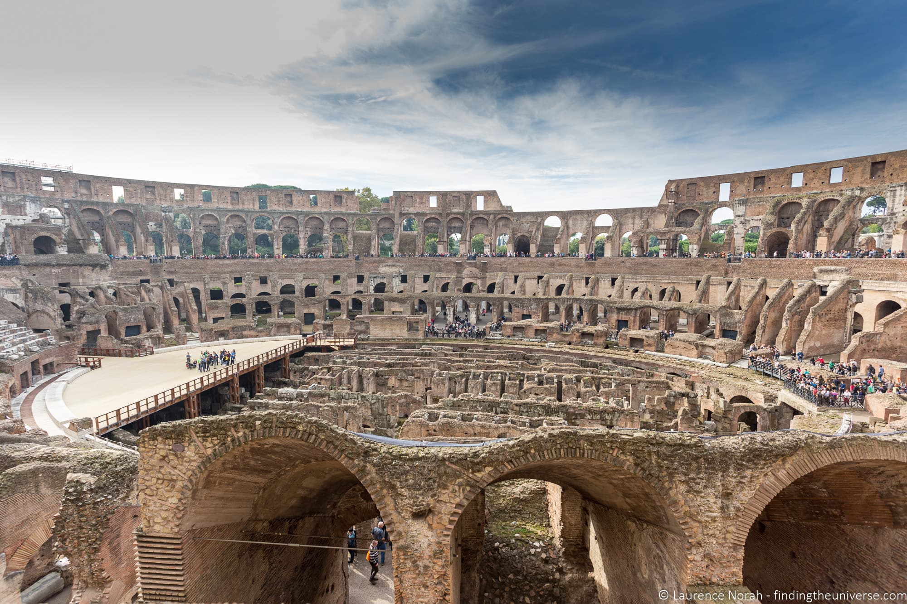

1. Switzerland
Matterhorn Peak

The iconic pyramid-shaped mountain is a symbol of Switzerland and attracts
mountaineers, hikers, and skiers. The picturesque village of Zermatt
at its base offers charming Swiss hospitality and stunning alpine views.
Lucerne
Located on the shores of Lake Lucerne, this city is known for its well-preserved medieval
architecture, picturesque landscapes, and the famous Chapel Bridge. Visitors come to
explore the old town, enjoy boat rides on the lake, and visit nearby Swiss mountains.
Interlaken
Nestled between Lake Thun and Lake Brienz, Interlaken is a popular adventure
sports destination. The town offers activities like skydiving, paragliding,
and skiing, attracting adrenaline seekers and nature enthusiasts.
2. Germany
Neuschwanstein Castle

This fairytale castle inspires awe with its picturesque location in Bavaria.
It was the inspiration for Disney's Sleeping Beauty Castle and attracts
tourists for its romantic architecture and stunning mountain views.
Brandenburg Gate

A historic symbol of the city, this neoclassical monument is visited
for its significance in German history. It stands as a symbol of unity
and is a popular gathering spot for locals and tourists alike.
The Black Forest

Known for its dense forests and charming villages, the Black Forest offers beautiful
scenery, hiking trails, and the famous cuckoo clocks. Visitors come to explore the
nature trails, taste the local cuisine, and enjoy the region's tranquility.
3. Italy
Colosseum
This ancient amphitheater is one of Italy's most iconic landmarks.
It attracts visitors for its historical significance, architectural
grandeur, and the opportunity to explore ancient Roman history.
Florence Cathedral

The main church of Florence, known for its stunning Renaissance architecture,
attracts visitors who marvel at its iconic dome, climb the bell tower for
panoramic views of the city, and explore the surrounding historic district.
Venetian Canals

The unique city of Venice is famous for its intricate network of canals.
Visitors come to experience a gondola ride, admire the beautiful architecture,
and wander through narrow alleys to discover hidden gems.
1. Switzerland
2. Germany
3. Italy